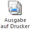
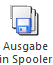
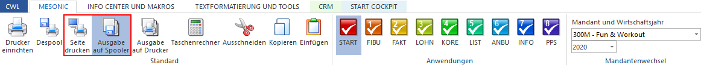

Die Auswahl, ob die Ausgabe auf den Drucker oder in den Spooler erfolgen soll, wird durch die Aktivierung einer der folgenden Button getroffen.
Ø

Ausgabe auf DruckerWenn "Ausgabe den Drucker" gewählt wurde, erfolgt der Ausdruck direkt an den Drucker.
Ø

Ausgabe in SpoolerDurch die Aktivierung von "Ausgabe in Spooler" werden alle Ausdrucke im Spooler gesammelt.
Hinweis
Diese Buttons befinden standardmäßig im linken oberen Bereich des WinLine Bildschirms.
Des Weiteren stehen die Buttons im Ribbon "MESONIC" zur Verfügung.

Zur optimalen Übersicht wird die aktuell Einstellung immer in der Statuszeile angezeigt.